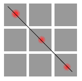
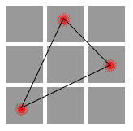
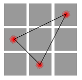
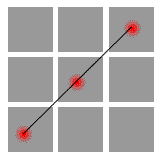
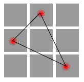
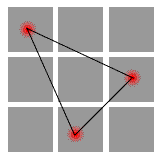

Matrix Game for Pocket PC |
||||
| Главная | Правила | Скриншоты | Скачать | Дополнительно |
|
{rus} {eng}
Matrix game is an absolutely new kind of math logical games. I bet you've never seen anything like that neither on PocketPC nor on any other platform. Hope you'll like this game. To play Matrix Game you won't need some superhuman math knowledge. A common school education will be enough to play and to win. Also all information needed will be given below. How to Play.A common matrix is a table of m collumns and n rows. In our case m = n = 3, so we have a table 3x3. In any cell a digit from 1 to 9 can be input. Once you've done that you can't use anymore neiser this digit nor this cell. In the game two players input digits in cells one by one. A determinat isanumber that characterizes the current posotion of numbers in matrix. It can be both positive and negative. The goal for one player is to get the highest matrix determinant. He is called "Positive Player" or "P+". The goal for another one is to to get the lowest possible deternminant. He is called "Negative Player" or "N-". How To Win.To win you need to know the rules of counting a determinant. In matrix there are some groups of cells, three for one player, three for another. To count a determinant you need to multiply three numbers in all groops, then sum the results. A determinant is a difference between a number that P+ got and the number of P-. Examine the groops for each player.
P+ groups   P- groups   As you see the groups are symmetrical, so it is easy to learn them. So to win you need to get higher numbers in you groups than in your opponent's groups. How to do it? The strategy is yours. Additional InfoAny comments or suggestions you may mail to pocketmatrix@mail.ru |
||||